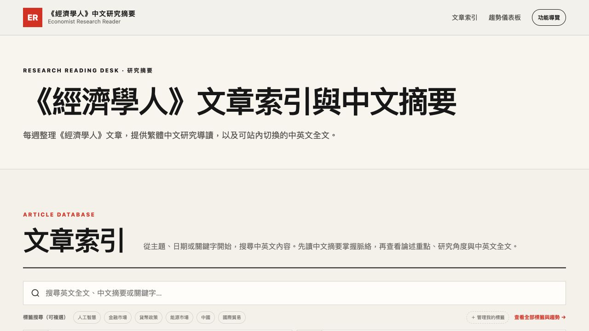
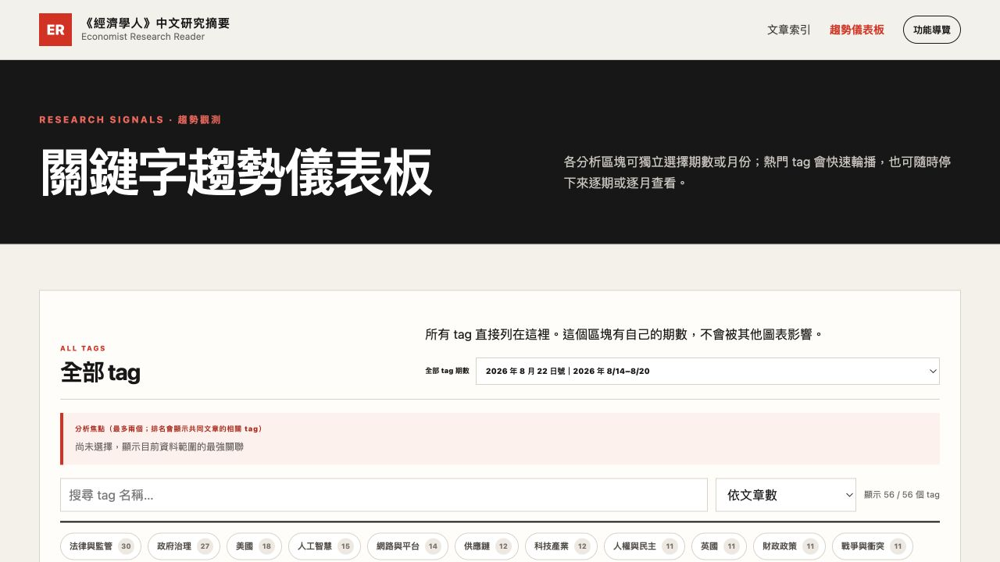

偵測
比對上游期數與來源版本
→《經濟學人》研究閱讀平台
把每期期刊整理成可搜尋的雙語研究資料庫。中文導讀協助研究員快速判讀內容，趨勢儀表板則用跨期標籤與關聯，觀察議題熱度及共同出現的研究線索。
01 · PRODUCT
文章索引回答「這篇值不值得讀」；趨勢儀表板回答「這幾期都在談什麼，以及哪些議題經常一起出現」。


02 · PIPELINE
模型只在匯入時執行。任何必要檢查失敗，正式網站維持上一個完整版本。
比對上游期數與來源版本
→從 EPUB 取得欄目、日期與英文段落
→產生事實初稿，再做 Humanizer 校修
→逐段翻譯，再對照英文定稿
→檢查篇數、段落、數字、標籤與版本
→全數通過後才更新正式網站
同一期且來源未變時安全結束；單篇異動只重做該篇；失敗時保留斷點與既有網站。
03 · HUMANIZER SKILL
自然化不是加料，而是在守住英文原文事實後，把中文改得精準、自然且能直接用於研究。
依英文原文建立摘要、論述重點、研究角度與標籤，先確保資訊齊全。
鎖定人物、數字、因果與保留語氣，刪除公式化 AI 腔並改為台灣研究用語。
04 · BUG LOG
這次不是「沒有抓到期刊」，而是抓到後被單篇短訊的固定品質門檻卡住。
模型多次產生約52至67字的摘要與37至45字的研究角度。內容相對於短訊已可能足夠，但一般文章規則要求更長，導致12次嘗試後仍失敗。系統依安全規則保留前70篇檢查點，待短文規格調整後只補跑失敗文章，最後完成整期發布。
目前已加入
下一步設計
05 · AI-ASSISTED MAINTENANCE
接手者不需要理解每支程式，也不用每天巡查自動化紀錄。
閱讀平台能正常開啟。
首頁顯示的最新期數符合預期。
有異常時，把閱讀平台、維運頁或錯誤畫面交給 AI 即可。
AI 判斷問題所在，提出補跑或程式修正；未完成內容仍不發布。
06 · STORAGE
公開程式、正式內容、私密設定與個人研究資料分別存放。
閱讀平台、趨勢儀表板、維運狀態及本說明頁
程式、文章索引、英文內容、中文導讀與繁中全文
Azure OpenAI 金鑰與部署設定，不送到瀏覽器
收藏、筆記及自訂標籤；目前不跨裝置同步
07 · PRIORITY
目前網站及部分內容位於公開環境，中英文全文可能涉及版權與使用範圍疑慮。下一階段應先處理存取權限，再擴大內容或使用人數。
網址本身不等於隱私。自訂網域仍需搭配登入、權限、VPN、IP 限制或其他存取控制。
程式與內容分開。可公開的程式說明與受限全文應分開保存及部署。
限制被搜尋。私人站點應避免搜尋引擎索引，並界定全文、翻譯及研究筆記的使用者範圍。
08 · NEXT
先解決風險與穩定性，再擴充個人化與研究分析能力。
先處理版權與使用者範圍，再搬移全文與個人研究資料。
完成短訊規格、共用驗證及事故狀態留存。
接入 Supabase，讓收藏、筆記及自訂標籤隨帳號同步。
增加跨期比較、議題追蹤、研究週報與主題雷達。
衡量平台是否縮短找資料與判讀時間；加入其他刊物前先確認授權。